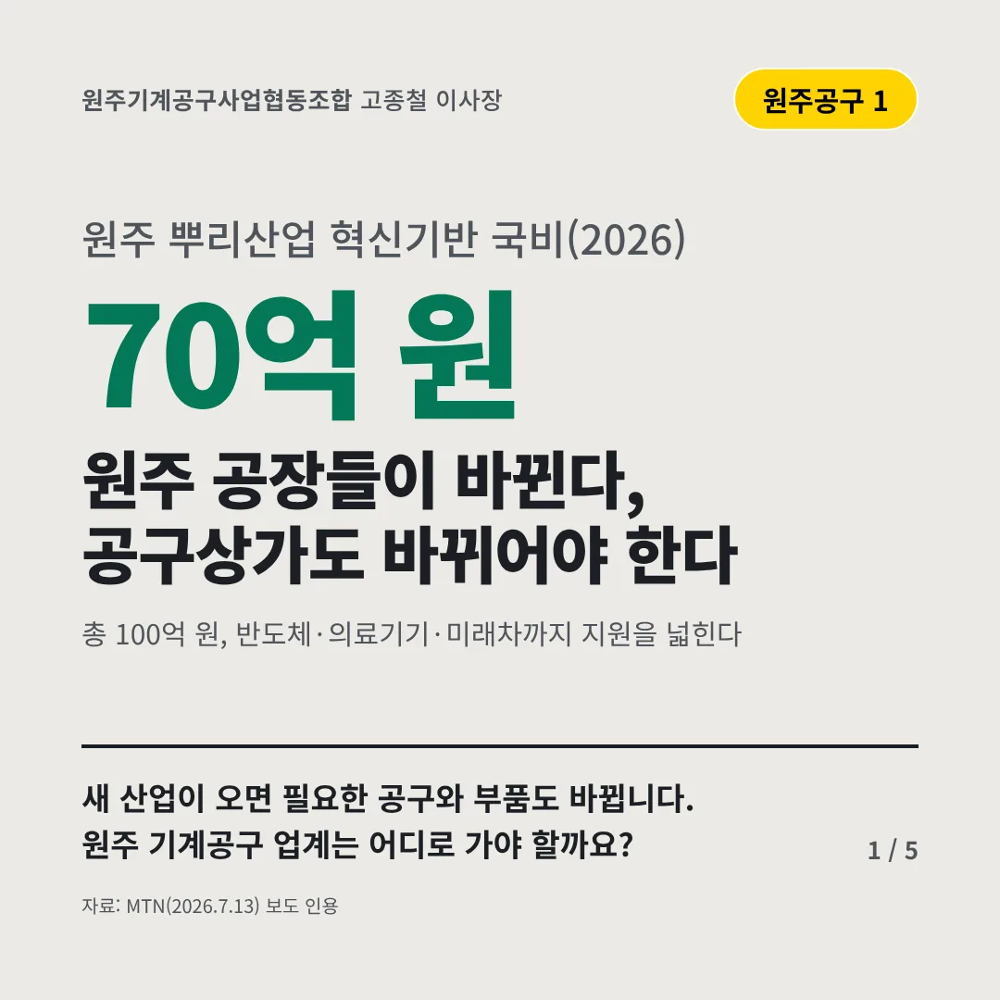
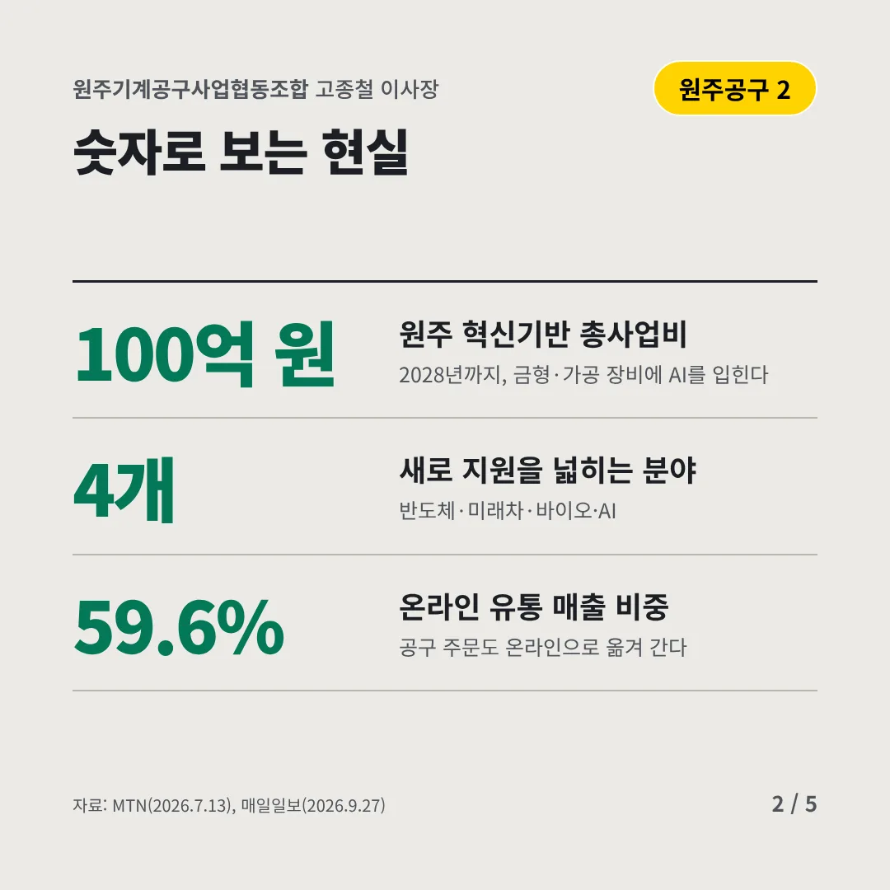
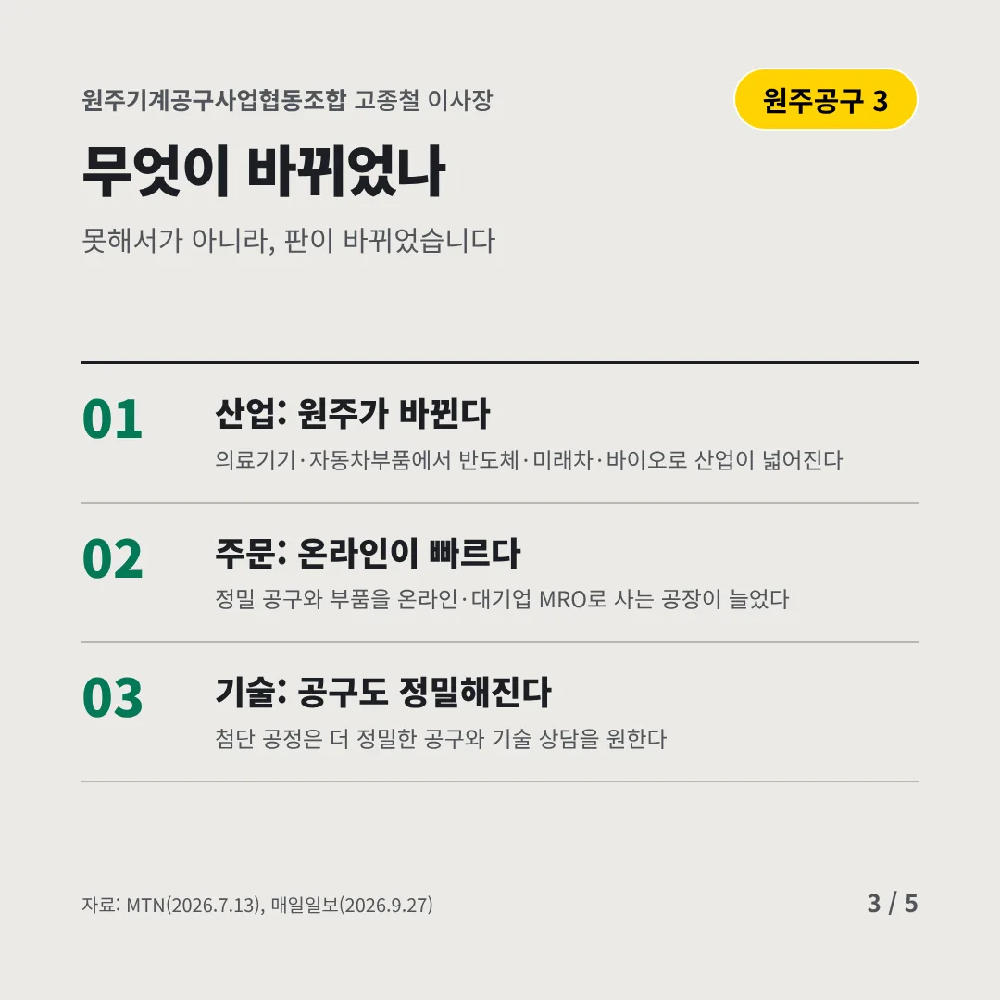
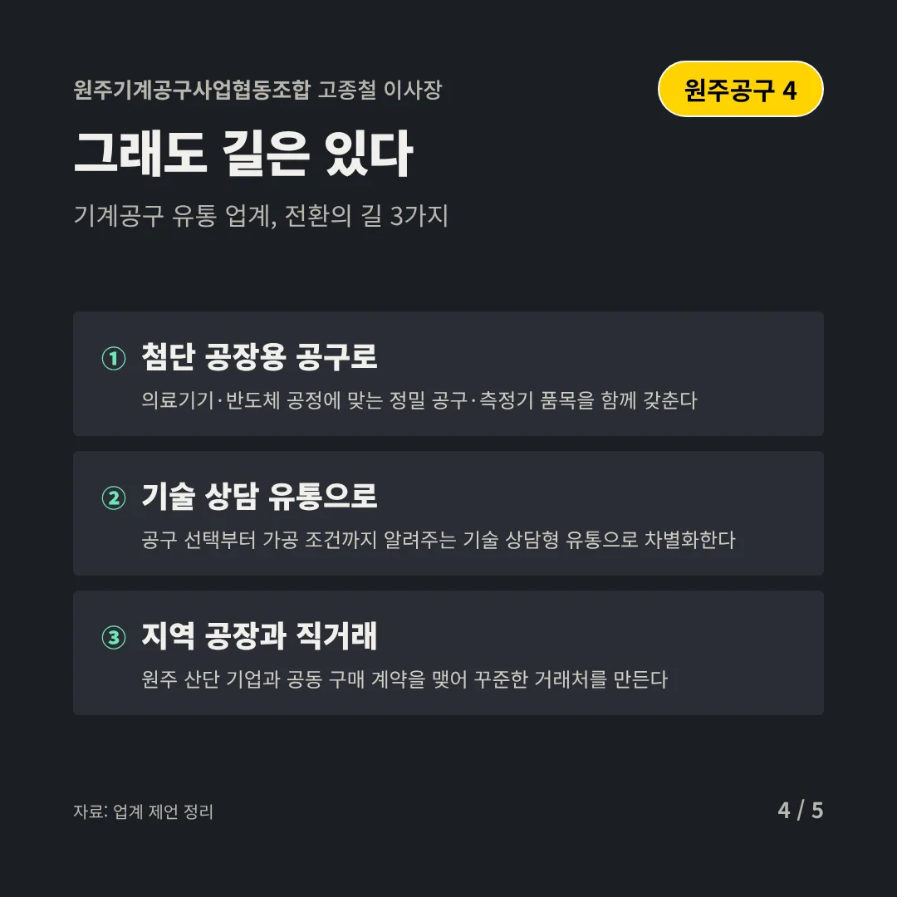
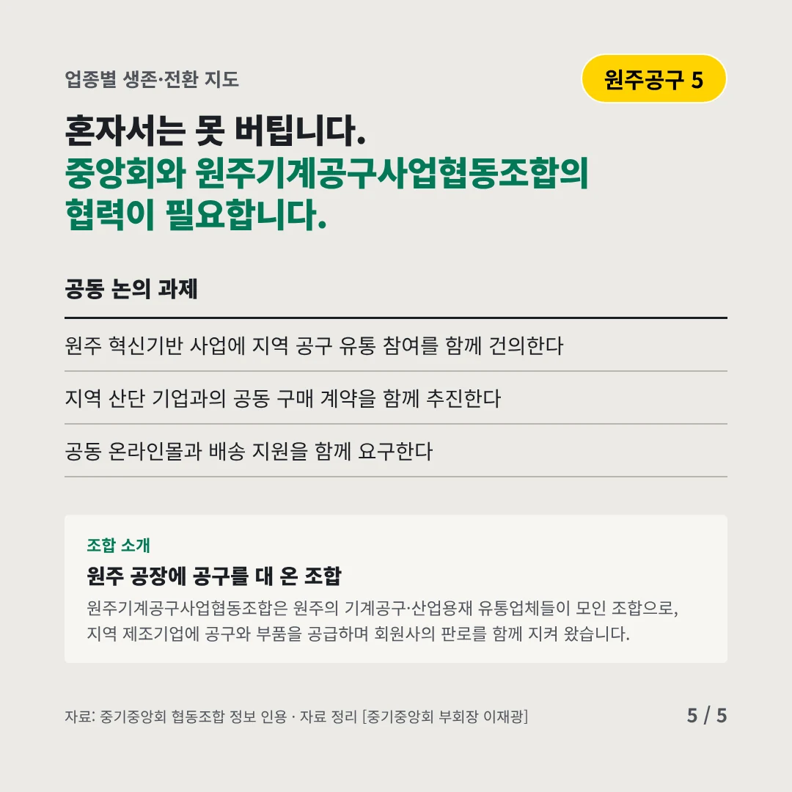
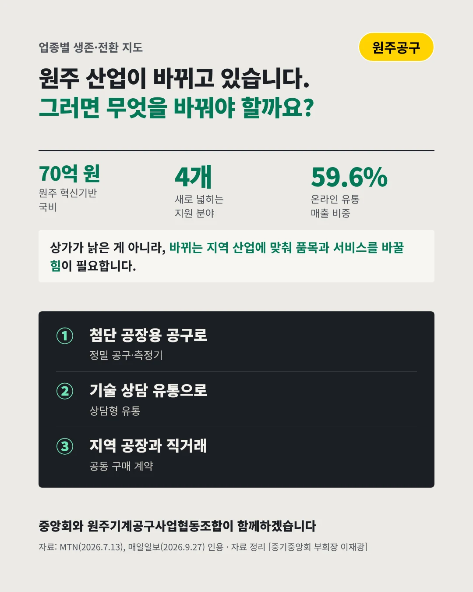

원주기계공구사업협동조합
원주 공장들이 바뀐다, 공구상가도 바뀌어야 한다
70억 원 원주 뿌리산업 혁신기반 국비(2026)






새 산업이 오면 필요한 공구와 부품도 바뀝니다. 원주 기계공구 업계는 어디로 가야 할까요?
숫자로 보는 현실
- 100억 원원주 혁신기반 총사업비2028년까지, 금형·가공 장비에 AI를 입힌다
- 4개새로 지원을 넓히는 분야반도체·미래차·바이오·AI
- 59.6%온라인 유통 매출 비중공구 주문도 온라인으로 옮겨 간다
무엇이 바뀌었나
- 산업: 원주가 바뀐다의료기기·자동차부품에서 반도체·미래차·바이오로 산업이 넓어진다
- 주문: 온라인이 빠르다정밀 공구와 부품을 온라인·대기업 MRO로 사는 공장이 늘었다
- 기술: 공구도 정밀해진다첨단 공정은 더 정밀한 공구와 기술 상담을 원한다
그래도 길은 있다
- 첨단 공장용 공구로의료기기·반도체 공정에 맞는 정밀 공구·측정기 품목을 함께 갖춘다
- 기술 상담 유통으로공구 선택부터 가공 조건까지 알려주는 기술 상담형 유통으로 차별화한다
- 지역 공장과 직거래원주 산단 기업과 공동 구매 계약을 맺어 꾸준한 거래처를 만든다
한 장 요약

조합 소개
원주기계공구사업협동조합은 원주의 기계공구·산업용재 유통업체들이 모인 조합으로, 지역 제조기업에 공구와 부품을 공급하며 회원사의 판로를 함께 지켜 왔습니다.
자료: MTN(2026.7.13), 매일일보(2026.9.27)